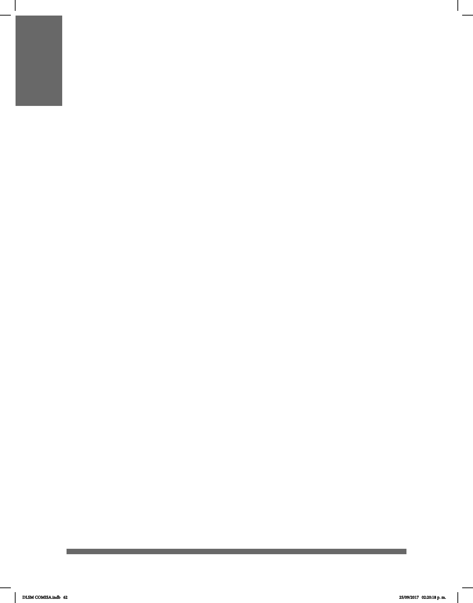

62
AFIJOS
El afijo, según la Real Academia Española (RAE), es un morfema o unidad mínima
de un signo o palabra que modifica el significado o las propiedades gramaticales de
la base léxica a la que se adjunta. Los afijos no se utilizan en la lengua de señas
como en las lenguas orales: los prefijos y sufijos se utilizan en contextos donde
predomina el español escrito y los oyentes que señan son los que los utilizan más.
PREFIJOS
Los prejos son morfemas que se anteponen a los elementos léxicos o palabras y que
marcan el tiempo, el género y el número; son circunstanciales que se expresan antes de
la emisión para ubicar el momento y lugar en los cuales se hará la emisión, así como la
concordancia con el sustantivo y demás elementos léxico gramaticales.
En la LSM, los morfemas utilizados como prefijos son señas que sirven como
circunstanciales dependiendo del contexto y muchas veces se usan por influencia
del español. Fueron utilizados durante muchos años y ahora sólo quedan algunos,
por ejemplo in- o im-, cuya articulación se realiza con la configuración manual I en
la MD, que choca con la MB.
El morfema que marca el género en la LSM es la seña de mujer, la cual se realiza
después de las señas que tienen género masculino.
El morfema marcador de número se articula antes del nombre. Si este número es
realmente signicativo, antecede y precede a la seña, es decir, hay una duplicación para
hacer énfasis.
El morfema marcador temporal se utiliza al inicio de la emisión, es decir, el señante indica
primero el tiempo en el cual ocurre su relato.
Otro tipo de marca temporal es el arquear el tronco hacia atrás, para hacer referencia a
un tiempo anterior o pasado, o hacia delante, para poder ubicar al receptor del mensaje
en un futuro.
Dentro de los prejos existe un fenómeno singular para la negación: hay señas
dobletes, es decir, existen señas que dieren sustancialmente de la seña
armativa. Por tanto, no es necesario un rasgo no manual (RNM), como mover la cabeza
lateralmente, sino que la negación está presente en la seña, por ejemplo:
Gustar / no gustar
Haber / no haber
Poder / no poder
Querer / no querer
DLSM COMISA.indb 62 25/09/2017 02:20:18 p. m.